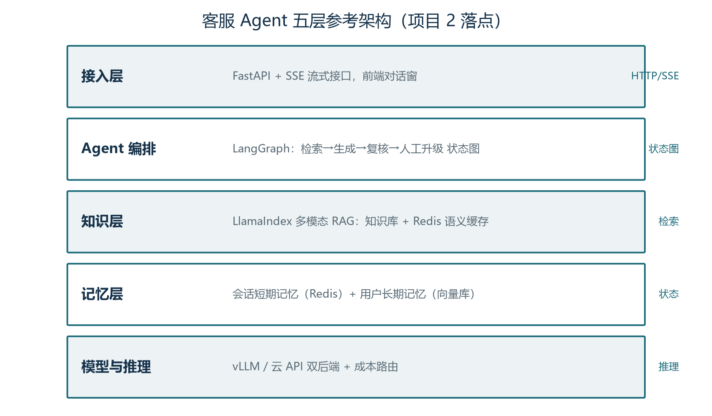
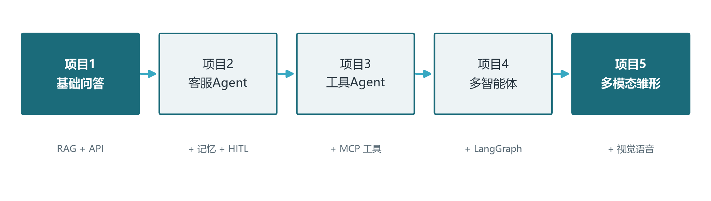

前言：本卷怎么用——学完全套后的"总装车间"
恭喜你走到这里。前十八卷讲完了原理、选型、压缩、检索、工具、记忆、规划、协作、观测、评估与安全，但如果只是"读过"，这些知识还是一条条孤立的线。本卷的目的只有一个：把它们编织成网。我们会从零开始、一步一步构建五个递进式的 Agent 项目，每个项目都刻意"回指"前卷的具体章节——你在阅读时会发现，很多当初觉得抽象的概念（状态图、语义缓存、前缀缓存、HITL、评估门禁），在真实代码里原来是这么落地的。
五个项目的设计逻辑是一条学习曲线：
- 项目一「基础问答机器人」：把卷07（提示词）、卷08（RAG）、卷05（部署）串起来，做一个带知识库的流式问答服务——约半天完成；
- 项目二「多轮客服 Agent」：在项目一基础上加入卷11（记忆）、卷09（Redis/向量库）、卷11 的 HITL（人工升级）与卷15 的评估集——约 1-2 天；
- 项目三「工具调用 Agent」：让 Agent 真正"做事"——接入卷10 的 Function Calling 与 MCP、卷12 的循环控制与失败恢复——约 1-2 天；
- 项目四「多智能体协作」：用卷13 的 LangGraph 把单 Agent 拆成"分诊-研究-审核"团队，体验协作模式与上下文隔离——约 1-2 天；
- 项目五「多模态雏形」：把卷17 的视觉理解接入，让客服 Agent 能"看图回答问题"——约 1 天。
每个项目的代码都刻意保持"骨架级可运行"：不引入庞杂依赖，核心逻辑清晰、可在普通笔记本上跑通（模型默认走云 API，或替换为卷05 自部署的 OpenAI 兼容端点）。代码旁标注了回指的卷次，例如【卷07 §3】表示对应卷07 第三章。完成全部五个项目后，你就拥有了一套可扩展的 Agent 代码基底——后续做任何真实产品，都可以从这里生长出去。
本卷所有代码在 Python 3.10+ 上运行，用到的库（openai、fastapi、langgraph、llama-index、redis、qdrant-client）均可 pip 安装。模型地址统一用一个环境变量 LLM_BASE（默认 https://api.openai.com/v1，可换成自部署 vLLM 地址）与 LLM_KEY。为了能实际跑通，请先申请任一模型 API Key 或启动一个本地推理服务。
0.1 环境准备与项目结构
动手前先把环境配齐，避免做到一半被依赖问题打断。建议用 Python 3.10+ 建一个虚拟环境（venv 或 conda），一次性安装五个项目需要的库。下面给出一份最小依赖清单与项目目录结构建议——目录结构提前想好，后面每个项目都在自己的子目录里演进，最后合体时不会乱。
# 建虚拟环境并安装依赖（建议 Python 3.10+）
python -m venv .venv
source .venv/bin/activate # Windows: .venv\Scriptsctivate
pip install fastapi uvicorn openai llama-index sentence-transformers redis qdrant-client langgraph python-dotenv
# 若本卷所有项目都走 OpenAI 兼容 API，还需：
# pip install tiktoken httpx
# 项目目录结构（建议）
# agent_handbook/
# ├── project1_basic_qa/ 项目一：RAG 问答
# ├── project2_cs_agent/ 项目二：客服 Agent
# ├── project3_tool_agent/ 项目三：工具 Agent
# ├── project4_multiagent/ 项目四：多智能体
# ├── project5_multimodal/ 项目五：多模态
# ├── docs/ 共享知识库文档（项目一建立）
# └── .env LLM_BASE / LLM_KEY 等配置配置用一个 .env 文件统一管理（python-dotenv 读取），键名遵循本卷前言约定：LLM_BASE（OpenAI 兼容地址）、LLM_KEY（密钥）、LLM_MODEL（默认对话模型）、VLM_MODEL（默认视觉模型，项目五用）。全部项目复用同一套配置，切换云 API 与自部署（卷05 vLLM）只改 .env 不改代码——这是 OpenAI 兼容协议（卷05 §6.4）带来的最大工程红利。
如果预算有限，五个项目都可以用轻量模型跑通：对话用 gpt-4o-mini 或自部署的 Qwen2.5-7B（卷05 vLLM 部署），嵌入用 text-embedding-3-small 或开源的 bge-m3，重排用 bge-reranker-base，视觉用 gpt-4o-mini 或开源 Qwen2.5-VL-7B（卷17 §2.3）。本卷代码里给的模型名只是示例，请按你的 .env 实际配置替换。
做一个项目前，先说清楚它到底解决什么、不解决什么。项目一解决的是"私有知识问答"的最小闭环：让 Agent 能回答训练数据里没有、但你的文档里有的问题，并给出可信引用。它不解决多轮记忆（那是项目二）、不解决调用外部系统（那是项目三）、不解决多角色协作（那是项目四）。把范围圈小，是为了让每一步代码都可理解、可测试——你会清楚地看到"检索质量如何决定回答质量"这个贯穿全卷的核心命题。
从工程心态上，项目一是你建立"评估-调优"节奏的地方。很多人第一次搭 RAG 会掉进"疯狂调切分参数"的陷阱，却从不先建评估集。本卷要求你反着来：先花 20 分钟建 15 个问题的评估集，再开始调——这样你每改一个参数（chunk 大小、top_k、重排开关），都能立刻看到是变好还是变坏（卷15 的评估驱动开发 EDD）。这是本卷与"照着教程敲代码"最大的不同：教程给你代码，本卷给你判断代码好坏的方法。
做一个项目前，先说清楚它到底解决什么、不解决什么。项目一解决的是"私有知识问答"的最小闭环：让 Agent 能回答训练数据里没有、但你的文档里有的问题，并给出可信引用。它不解决多轮记忆（那是项目二）、不解决调用外部系统（那是项目三）、不解决多角色协作（那是项目四）。把范围圈小，是为了让每一步代码都可理解、可测试——你会清楚地看到"检索质量如何决定回答质量"这个贯穿全卷的核心命题。
从工程心态上，项目一是你建立"评估-调优"节奏的地方。很多人第一次搭 RAG 会掉进"疯狂调切分参数"的陷阱，却从不先建评估集。本卷要求你反着来：先花 20 分钟建 15 个问题的评估集，再开始调——这样你每改一个参数（chunk 大小、top_k、重排开关），都能立刻看到是变好还是变坏（卷15 的评估驱动开发 EDD）。这是本卷与"照着教程敲代码"最大的不同：教程给你代码，本卷给你判断代码好坏的方法。
0.2 五个项目总览
下表把五个项目的目标、输入、关键技术与"做完你能获得什么"浓缩成一张速查，方便你在开始前建立全局观，也方便将来回翻定位。
| 项目 | 一句话目标 | 核心技术 | 回指卷次 | 时长 |
|---|---|---|---|---|
| 项目一 基础问答 | 让 Agent 基于私有知识库回答问题 | RAG、流式 API、评估集 | 卷07/08/14 | 约半天 |
| 项目二 客服 Agent | 多轮对话 + 记忆 + 人工升级 | Redis/向量记忆、LangGraph 状态图、HITL | 卷09/11/13 | 1-2 天 |
| 项目三 工具 Agent | Agent 调用真实工具办事 | Function Calling、MCP、循环控制 | 卷10/12 | 1-2 天 |
| 项目四 多智能体 | 分诊-研究-审核团队协作 | LangGraph 多 Agent、返工回路 | 卷13 | 1-2 天 |
| 项目五 多模态雏形 | 客服能看用户发来的图 | OCR+VLM 双通道、图转上下文 | 卷17 | 约 1 天 |
五个项目按依赖顺序串联：项目二复用项目一的 RAG 地基，项目三复用项目二的状态图，项目四复用项目三的工具，项目五叠加在项目二之上。每个项目的输出（索引、Agent 类、工具函数）都是下一个项目的输入——这正是"可生长底座"的含义：你不需要为每个新需求推倒重写，而是在既有组件上叠加能力。
0.3 AI 原生开发工作流：把编程助手用起来
动手做本卷五个项目之前，先花十分钟把"AI 编程助手"纳入你的开发流——这不是可选项：如今 Agent 工程师岗位的任职要求里，"熟练使用 Cursor、Claude Code 等 AI 原生工具"几乎是标配。更重要的是，你接下来要开发的系统本身就是 Agent，先用别人做的 Agent 改造自己的工作流，是理解 Agent 能力边界最直接的途径：你会亲身感受到它什么时候帮上大忙、什么时候一本正经地把你带进沟里。
市面上的编程助手可以分成三类，定位各不相同。① 补全型（GitHub Copilot、Codeium 等）：以 IDE 内联补全为主，写代码时逐段提示，适合熟练之后提速；② AI 编辑器（Cursor、Windsurf 等）：把整个代码库作为上下文，支持"多文件改写、按自然语言重构、问答式理解代码"，适合中等规模改造与代码库导航；③ 终端 Agent 型（Claude Code、OpenAI Codex CLI、Aider 等）：在终端里接收任务，自主读写文件、运行命令与测试、迭代修复——它本身就是你后面要讲的那种 Agent（工具调用 + 循环 + 反馈），只是工具集换成了你的文件系统与 shell。
结合本卷的五个项目，编程助手最值得投入的用法有六种。① 搭脚手架：生成项目目录、FastAPI 路由骨架、依赖清单，省下样板时间；② 解释代码：把第三方库源码或本卷示例里没看懂的片段交给它逐行解释，比搜索更快；③ 调试 trace：把报错栈连同相关代码贴进去定位问题，对"工具调用参数错、类型不匹配"这类问题尤其有效；④ 批量改写：提示词模板重命名、SDK 版本迁移、给函数补类型标注；⑤ 生成测试与评估用例：让它基于实现写出测试与边界样例，你再审查补充——这正是卷15 评估实践的日常形态；⑥ 写文档：README、函数注释、变更说明。
但必须带上五条纪律，否则会踩坑。① 它会出错，而且错得很自信：生成的代码必须跑测试、必须人工审查，对"看起来对"的代码保持警惕。② 别把秘密喂给云端助手：API Key、生产数据、客户信息不要出现在提示词里（卷16 的数据边界同样适用于你的开发工具）。③ 权限与沙箱意识：终端 Agent 能改文件、能执行命令——在重要仓库里使用前，先确认它的权限范围与撤销机制，读懂它请求的每一项操作再批准。④ 它救不了"模型行为类"问题：检索质量差、提示词不稳、Agent 死循环，这些不是"写错代码"，而是本手册各卷的方法论问题（评估、上下文工程、循环控制）；编程助手能帮你改代码，不能替你设计方案。⑤ 学习目的优先：五个项目的核心逻辑建议亲手写——让助手搭骨架、查资料、当陪练，而不是替你完成作业；你亲手调试过的每一个坑，才是这套手册真正要给你的东西。
最后一个迁移性极强的习惯：把"给助手写清楚需求"当作提示词工程的日常练习。你会自然发现，让编程助手干好活所需的技巧——给足上下文、说明验收标准、拆解任务、要求它先给方案再动手、出错时贴证据而不是空抱怨——与卷七的提示词工程、卷十二的任务分解完全同构。反过来，用 Agent 的经验也会让你更会给助手派活。两种能力互相喂养，这是 Agent 工程师在这个行业里最朴素也最实用的复利。
第一章 项目一：基础问答机器人（RAG + 流式）
1.1 项目目标与架构
项目一是整个体系的地基。目标：做一个"能回答私有知识库问题"的流式问答服务。用户在前端输入问题，后端检索知识库、组装上下文、流式返回答案，并附上引用来源。它只解决一件事——把卷07、08、09 的"检索增强问答"跑成一个可用的最小系统。
架构三层：API 层（FastAPI 提供 /chat 流式接口）、RAG 层（文档切分 → 向量化 → 检索 → 重排）、模型层（OpenAI 兼容接口，支持流式）。技术栈刻意最小：只用 FastAPI + llama-index + openai SDK，不引入 LangGraph（那是项目二的事）。数据用一个虚构的产品手册目录（你可以换成任何文档）。

1.2 搭建知识索引
第一步是"把文档变成可检索的索引"（卷08 §2 的完整落地）。我们用 LlamaIndex（卷08 §6 讲过它为何适合做数据接入与索引）把本地文档目录建成向量索引。为了控制篇幅，下面给出可直接运行的骨架：
# index_build.py —— 构建知识索引（卷08 §2/§6、卷09 §2）
import os
from llama_index.core import (
SimpleDirectoryReader, VectorStoreIndex, Settings,
StorageContext, load_index_from_storage,
)
from llama_index.embeddings.openai import OpenAIEmbedding
from llama_index.llms.openai import OpenAI
LLM_BASE = os.getenv("LLM_BASE", "https://api.openai.com/v1")
LLM_KEY = os.getenv("LLM_KEY", "sk-xxx")
# 统一设置嵌入与 LLM（卷08：检索质量 = 切分 × 嵌入 × 检索）
Settings.embed_model = OpenAIEmbedding(
model="text-embedding-3-small", api_base=LLM_BASE, api_key=LLM_KEY)
Settings.llm = OpenAI(model="gpt-4o-mini", api_base=LLM_BASE,
api_key=LLM_KEY, temperature=0.2)
DOC_DIR = "./docs" # 放你的产品手册/知识文档
STORE_DIR = "./store" # 索引持久化目录
def build_or_load_index():
if os.path.exists(STORE_DIR):
return load_index_from_storage(
StorageContext.from_defaults(persist_dir=STORE_DIR))
docs = SimpleDirectoryReader(DOC_DIR, recursive=True).load_data()
# 默认递归切分+向量索引；生产请按卷08 §2.3 调 chunk 与元数据
index = VectorStoreIndex.from_documents(docs)
index.storage_context.persist(persist_dir=STORE_DIR)
return index
if __name__ == "__main__":
idx = build_or_load_index()
print(f"索引就绪，文档数：{len(idx.ref_doc_info)}")这段代码值得注意的几个点都对应前卷知识：SimpleDirectoryReader 自动按后缀解析（卷08 §6 的 Reader 体系）；Settings 全局配置嵌入与 LLM（卷08 §6 的配置驱动）；persist 把索引存盘避免每次重建（生产上对应卷09 的持久化与卷16 的资产备份）。跑通后你会得到一个持久化的向量索引——后续所有项目都会复用它。
1.3 检索问答服务
第二步是暴露一个流式问答接口。我们用手写的检索器显式控制"检索→重排→生成"三步（卷08 §3/§4），而不是让框架黑盒处理——这样你能看清每步在做什么：
# app.py —— 流式问答服务（卷08 §4、卷14 §4、卷05 §6.4）
import os, json
from fastapi import FastAPI
from fastapi.responses import StreamingResponse
from llama_index.core import load_index_from_storage, StorageContext
from llama_index.core.postprocessor import SentenceTransformerRerank
from llama_index.core.retrievers import VectorIndexRetriever
from llama_index.core.response_synthesizers import CompactAndRefine
from llama_index.core.schema import NodeWithScore, QueryBundle
from llama_index.core.query_engine import RetrieverQueryEngine
from index_build import build_or_load_index, Settings, LLM_BASE, LLM_KEY
app = FastAPI()
index = build_or_load_index()
retriever = VectorIndexRetriever(index=index, similarity_top_k=8) # 召回 8 条
reranker = SentenceTransformerRerank(model="BAAI/bge-reranker-base", top_n=3) # 重排到 3
synth = CompactAndRefine(llm=Settings.llm, streaming=True)
def retrieve(query: str) -> list[NodeWithScore]:
nodes = retriever.retrieve(QueryBundle(query_str=query))
return reranker.postprocess_nodes(nodes, query_bundle=QueryBundle(query_str=query))
@app.get("/health")
def health(): return {"status": "ok"}
@app.post("/chat")
async def chat(req: dict):
query = req.get("query", "")
nodes = retrieve(query)
sources = [{"text": n.node.get_text()[:200],
"file": n.node.metadata.get("file_path", "")}
for n in nodes] # 引用溯源（卷08 §4）
context_str = "\n\n".join(
f"[来源{i+1}] {n.node.get_text()}" for i, n in enumerate(nodes))
async def gen():
# 手动组装提示：注入检索上下文（卷07 §3 上下文工程）
prompt = (f"请基于以下资料回答用户问题。如果资料不足，请如实说明。\n\n"
f"资料：\n{context_str}\n\n问题：{query}\n回答：")
resp = synth.synthesize(
query=QueryBundle(query_str=query),
nodes=nodes,
# CompactAndRefine 内部会调用 LLM；这里简化用手写提示走流式
)
# 说明：完整流式合成见 retriever_query_engine；此处演示手动流程
stream = Settings.llm.stream_complete(prompt)
for chunk in stream:
if chunk.delta:
yield f"data: {json.dumps({'delta': chunk.delta}, ensure_ascii=False)}\n\n"
yield f"data: {json.dumps({'sources': sources}, ensure_ascii=False)}\n\n"
yield "data: [DONE]\n\n"
return StreamingResponse(gen(), media_type="text/event-stream")代码里刻意保留了"教科书式"的手写流程，方便你看到检索-重排-合成三步。生产环境（卷16）会把这个接口套上鉴权、限流、追踪（卷15）——但骨架就是这三步。启动 uvicorn app:app --port 8000 后，用 curl 或任意 SSE 客户端（卷14 §4 的 EventSource 示例）即可对话。
1.4 评估这一版
项目一必须做的收尾是"建一个最简评估集并跑出基线"（卷15 §5）。不用很正式：准备 15-20 个真实业务问题（含：能从文档答出的、需要多篇综合的、文档里没有的"拒答"题），跑一遍记录三类表现：答对、答错、乱答（幻觉）。重点观察"乱答"比例——它是 RAG 质量最直接的警示灯。
常见翻车与对策（对应卷08）：检索结果与问题无关 → 检查切分与嵌入、尝试混合检索（卷08 §3/卷09 §4）；回答张冠李戴 → 加引用溯源并让模型"仅基于资料"；知识库没有却硬答 → 在系统提示加拒答条款并设相似度阈值（低于阈值直接说"未找到"）。把这些调优过程记下来——它们就是项目二评估集的第一批回归用例。
# 启动与测试（项目一）
pip install fastapi uvicorn llama-index openai sentence-transformers \
redis qdrant-client langgraph # 后三个项目二三用
uvicorn app:app --port 8000
curl -N http://localhost:8000/chat -H "Content-Type: application/json" \
-d '{"query": "你们的保修期是多久？"}'项目二把"会答问题"升级为"会做客服"。这个升级的工程本质，是把项目一的无状态函数改造成有状态、有分支、有兜底的系统。你将会第一次引入真正的状态管理（LangGraph 的 State）、外部存储（Redis、向量库）和人工介入点（HITL）。这些概念在前卷都是理论，从本章开始变成你手下的代码。
做完项目二，你应该能回答三个问题：用户的多轮上下文存在哪里、怎么控制它不无限膨胀？Agent 什么时候该自己答、什么时候该要更多信息、什么时候该转人工，这个判断逻辑放在哪一层？如果 Agent 答错了，你如何知道是哪一步出的错？这三个问题分别对应记忆设计、决策路由、可观测性——它们是生产级客服 Agent 的三大支柱。
1.5 工程复盘：为什么你的 RAG "看起来笨"
做完项目一，最常见的困惑是"demo 能答对，但总感觉哪里笨"。这里盘点初学者最常遇到的五个"笨"及其根因，帮你少走弯路。笨之一：问法换一下就答不对——根因往往是检索召回差（同义改写、口语化问题在向量空间里没匹配上），对策是卷08 §3 的查询改写（多查询扩展）或混合检索（卷09 §4），也可以先检查嵌入模型是否与文档语言匹配。笨之二：答案张冠李戴、把 A 文档的信息安到 B 头上——根因是切分粒度或上下文注入顺序问题（卷08 §4.2 的排版规范），也可能是多个来源冲突时模型不知以谁为准，对策是给每段来源加标识并明确"优先最新版本/最高权威"。笨之三：明明文档里有却不答——先确认不是切分把关键句切丢了（父子分块，卷08 §2.3），再检查 top_k 是否太小、重排是否把正确答案排掉了。笨之四：一问就乱答、甚至编造——知识库没有答案时模型在"硬答"，对策是拒答条款 + 相似度阈值（卷08 §4.4），低于阈值明确说"未找到"。笨之五：速度慢——每次回答都在重新嵌入和全量检索，对策是向量索引 + 前缀缓存（卷05）+ 语义缓存（卷09/卷18）。
复盘的方法论比具体对策更重要：任何"笨"，先猜一个环节（切分/嵌入/检索/重排/生成），再用最小实验验证，而不是凭感觉乱调。这也是卷15 评估体系在项目层面的体现。把你在项目一遇到的每个"笨"记进错误博物馆（卷01 提的习惯），它们会在项目二到五里反复出现——因为五个项目共享同一套检索地基，地基的问题不会因为上层变复杂而消失，只会被放大。
项目二把"会答问题"升级为"会做客服"。这个升级的工程本质，是把项目一的无状态函数改造成有状态、有分支、有兜底的系统。你将会第一次引入真正的状态管理（LangGraph 的 State）、外部存储（Redis、向量库）和人工介入点（HITL）。这些概念在前卷都是理论，从本章开始变成你手下的代码。
做完项目二，你应该能回答三个问题：用户的多轮上下文存在哪里、怎么控制它不无限膨胀？Agent 什么时候该自己答、什么时候该要更多信息、什么时候该转人工，这个判断逻辑放在哪一层？如果 Agent 答错了，你如何知道是哪一步出的错？这三个问题分别对应记忆设计、决策路由、可观测性——它们是生产级客服 Agent 的三大支柱。
第二章 项目二：多轮客服 Agent（记忆 + 人工升级）
2.1 从"问答"到"对话"：缺什么
项目一能回答问题，但它有三个致命缺陷，恰好对应 Agent 与聊天机器人的分野（卷01 §1.2）：无记忆——每轮独立，用户说"那退货运费谁出"它不知道上文是什么订单；无状态——无法区分两个用户、无法记住用户身份；无人工兜底——遇到搞不定的场景（用户要退款，超出权限）只能硬答，不能"升级给真人"。项目二的目标就是补齐这三块，把它升级成"多轮客服 Agent"。
升级分四步：会话与用户记忆（Redis 短期记忆 + 向量库长期记忆，卷11）、状态化编排（引入 LangGraph 状态图：检索→生成→复核→升级，卷13）、HITL 人工升级（关键节点可暂停转人工，卷11 §6）、评估回归（把项目一评估集扩展成正式基线）。每一步都在既有代码上叠加，不推倒重来。
2.2 加入会话与用户记忆
先解决"上下文断层"。我们用 Redis 存每轮会话的最近消息（滑动窗口，卷11 §2），用向量库存"跨会话的用户画像与历史结论"（长期记忆，卷11 §3）。会话开始时，把两者组装成上下文（卷11 的"检索→组装"模式）：
# memory.py —— 两层记忆（卷11 §2/§3、卷09 §3 Redis）
import redis, json
from llama_index.core import StorageContext, VectorStoreIndex
from llama_index.core.schema import TextNode
r = redis.Redis(host="localhost", port=6379, decode_responses=True)
class SessionMemory:
"""短期记忆：Redis 滑动窗口存最近 12 条消息"""
MAX_MSGS = 12
def __init__(self, session_id: str):
self.key = f"session:{session_id}:msgs"
def add(self, role: str, content: str):
r.rpush(self.key, json.dumps({"role": role, "content": content},
ensure_ascii=False))
if r.llen(self.key) > self.MAX_MSGS:
r.ltrim(self.key, -self.MAX_MSGS, -1) # 滑出旧消息
def history(self) -> list[dict]:
return [json.loads(x) for x in r.lrange(self.key, 0, -1)]
class UserMemory:
"""长期记忆：向量库存用户偏好/历史结论，会话开头检索注入"""
def __init__(self, index: VectorStoreIndex):
self.index = index
def remember(self, user_id: str, fact: str):
node = TextNode(text=fact, metadata={"user_id": user_id})
self.index.insert_nodes([node])
def recall(self, user_id: str, query: str, top_k=3) -> str:
retriever = self.index.as_retriever(similarity_top_k=top_k)
nodes = retriever.retrieve(f"{user_id} {query}")
# 只保留本用户的记忆（卷16 数据隔离）
mine = [n for n in nodes if n.metadata.get("user_id") == user_id]
return "\n".join(n.node.get_text() for n in mine[:top_k])工程要点（回指卷11）：短期记忆用 TTL 之外还要有"滑出"机制（ltrim），防止单会话无限增长；长期记忆必须带 user_id 元数据并在召回时过滤，否则"用户 A 的偏好"会污染"用户 B"的回答——这是卷16 数据隔离原则在最简单层面的体现。启动前记得 redis-server（卷09 §3 讲过 Redis 的多面手角色）。
2.3 用 LangGraph 搭建状态化流程
多轮对话的流程不再是"直线问答"，而是一个有分支、有复核、可升级的状态图（卷13 §3）。我们用 LangGraph 定义四个节点：检索（从知识库取资料）、复核（LLM 判断能否回答，还是需要更多信息/超出能力）、回答（生成回复）、升级（转人工）。节点间用条件边路由：
# agent_graph.py —— LangGraph 客服状态图（卷13 §3、卷12 §3 循环）
from typing import TypedDict, Literal
from langgraph.graph import StateGraph, END
from memory import SessionMemory, UserMemory
class State(TypedDict):
query: str
history: list
retrieved: str
decision: Literal["answer", "need_more", "escalate"]
reply: str
class CSGraph:
def __init__(self, index, user_mem: UserMemory, llm):
self.retriever = index.as_retriever(similarity_top_k=5)
self.user_mem = user_mem
self.llm = llm
self.graph = self._build()
def _retrieve(self, s: State) -> dict:
nodes = self.retriever.retrieve(s["query"])
return {"retrieved": "\n\n".join(n.node.get_text()[:800] for n in nodes[:3])}
def _review(self, s: State) -> dict:
# 复核：LLM 判断资料是否足够回答（卷12 反思/自评估思想）
prompt = (f"你是质检员。基于资料与用户问题，判断回复策略：\n"
f"资料：{s['retrieved'][:1500]}\n问题：{s['query']}\n"
f"只能输出：answer / need_more / escalate（涉及退款、投诉、"
f"隐私问题时必须 escalate）")
decision = self.llm.complete(prompt).text.strip().lower()
if decision not in ("answer", "need_more", "escalate"):
decision = "escalate" # 默认保守
return {"decision": decision}
def _answer(self, s: State) -> dict:
prompt = (f"你是客服助手。仅基于资料回答，引用资料时说明依据。\n"
f"用户历史：{s['history'][-6:]}\n资料：{s['retrieved']}\n"
f"用户问题：{s['query']}\n回答：")
return {"reply": self.llm.complete(prompt).text}
def _need_more(self, s: State) -> dict:
return {"reply": "抱歉，我需要再确认几个细节才能准确回答："
"请问您的订单号是？（这样我可以查询更准确的信息）"}
def _escalate(self, s: State) -> dict:
# 升级人工：写待办进 Redis 队列（卷11 HITL），返回安抚话术
return {"reply": "这个问题我需要转给人工客服专员，"
"预计几分钟内为您处理，请稍候。"}
def _route(self, s: State):
return s["decision"]
def _build(self):
g = StateGraph(State)
g.add_node("retrieve", self._retrieve)
g.add_node("review", self._review)
g.add_node("answer", self._answer)
g.add_node("need_more", self._need_more)
g.add_node("escalate", self._escalate)
g.set_entry_point("retrieve")
g.add_edge("retrieve", "review")
g.add_conditional_edges("review", self._route,
{"answer": "answer", "need_more": "need_more", "escalate": "escalate"})
for end in ("answer", "need_more", "escalate"):
g.add_edge(end, END)
return g.compile()
def ask(self, query: str, session_id: str, user_id: str) -> str:
mem = SessionMemory(session_id)
long_term = self.user_mem.recall(user_id, query) # 长期记忆注入
out = self.graph.invoke({
"query": f"{long_term}\n\n用户: {query}" if long_term else query,
"history": mem.history(),
})
mem.add("user", query)
mem.add("assistant", out["reply"])
return out["reply"]这个图的"含金量"在于 _route 的条件分支与 _review 的保守默认（卷13 §3 的 C-RAG 自纠正思想 + 卷11 HITL 的升级触发）。把"涉退款/投诉/隐私必须 escalate"写死在复核提示里，是卷16 安全护栏在客服场景的最小实现——规则比模型判断更可靠的地方，用规则兜底。LangGraph 的 checkpointer（卷11 §5）可进一步保存会话状态，此处用 Redis 简化。
2.4 评估与人工升级闭环
项目二最后做三件事。一是把评估集升级成"场景化"：每个用例带前置对话历史（多轮）、用户身份（画像）与期望行为（含"应升级人工"的用例），覆盖 happy path / 需要澄清 / 需升级 / 知识外拒答四类。二是给升级路径接真人工：escalate 节点把会话快照写入 Redis 的 pending_human 队列，客服工作台轮询该队列并接管（这就是卷11 HITL 的"审批/升级"模式落地）。三是做成本记录（卷18）：给每个节点算 token 消耗，观察"升级率 × 单次成本"是否在预算内。
完成项目二后，你已经拥有一个"有记忆、有状态、有兜底"的生产雏形客服 Agent。它的评估报告（准确率 + 升级率 + 单次成本）就是向团队证明 Agent 价值的第一个数据点。下一章我们让它从"会聊天"进化到"会办事"。
如果说项目二让 Agent "有了脑子"，项目三就是给它"接上手"。这一步的认知跨越在于：模型输出从"给人看的文字"变成"给程序执行的动作"。你会第一次体会到卷10 反复强调的观点——工具调用是 Agent 从"信息提供者"变成"任务执行者"的分水岭。同时，给模型接上能改世界的工具，也第一次让"安全"从卷16 的抽象概念变成你必须亲手处理的代码问题。
项目三的另一个学习重点是失败。纯对话 Agent 答错一句损失有限；工具 Agent 调错一次（查错订单、提交错申请）后果被放大。因此本章代码特意演示了"错误如何被优雅地吞进循环、让模型自己决定下一步"，以及"权限校验必须在工具层做而不是指望模型自律"。带着"工具会失败、模型会越权"的预设去写代码，是工具 Agent 工程师的第一课。
2.5 工程复盘：状态图为什么比 if-else 强
有人会问：这个客服流程用 if-else 也能写，为什么要引入 LangGraph？答案在卷13 §3 的核心论点：当流程有"分支、循环、并行、人工暂停"时，显式状态图比散落的 if-else 可维护得多。具体到本项目：可回放（LangGraph 的 checkpointer 能保存每一步状态，出问题时回放整条轨迹，卷11 §5）、可可视化（图结构可以直接渲染，向同事解释流程时画图比读代码直观）、可扩展（加一个新节点 = 加一个函数 + 连一条边，而不是改一堆 if 分支）。这些收益在流程只有三四个节点时不明显，但项目四扩展到多智能体时就是生死线。
另一个复盘点是决策逻辑放哪：把"是否需要升级人工"交给模型判断（_review 节点的提示词）还是交给代码规则？本项目的答案是混合：涉及退款/投诉/隐私这类高风险类目用代码规则硬性升级（规则可靠、可审计），其余场景用模型判断（灵活）。这个"规则兜底 + 模型判断"的分工贯穿卷16 安全设计的全部——凡是"错了不可逆"的决策，不要让模型单独拍板。最后提醒：_escalate 节点在真实系统里不只是回一句话，它要把完整会话上下文（用户信息、历史、检索到的资料、模型草稿）打包写入人工工作台的队列，让人工无缝接管而不是让用户重说一遍——这个"上下文交接"设计质量，直接决定 HITL 体验（卷11 §6.3 审批上下文）。
如果说项目二让 Agent "有了脑子"，项目三就是给它"接上手"。这一步的认知跨越在于：模型输出从"给人看的文字"变成"给程序执行的动作"。你会第一次体会到卷10 反复强调的观点——工具调用是 Agent 从"信息提供者"变成"任务执行者"的分水岭。同时，给模型接上能改世界的工具，也第一次让"安全"从卷16 的抽象概念变成你必须亲手处理的代码问题。
项目三的另一个学习重点是失败。纯对话 Agent 答错一句损失有限；工具 Agent 调错一次（查错订单、提交错申请）后果被放大。因此本章代码特意演示了"错误如何被优雅地吞进循环、让模型自己决定下一步"，以及"权限校验必须在工具层做而不是指望模型自律"。带着"工具会失败、模型会越权"的预设去写代码，是工具 Agent 工程师的第一课。
第三章 项目三：工具调用 Agent（让 Agent 真正办事）
3.1 项目目标：从"会聊"到"会做"
项目二里的 Agent 只动嘴不动手——它能检索知识库、能回答，但"查订单物流"这种动作做不到，因为它没有工具。项目三的目标是给它接上真实世界的执行能力：查询订单、查询物流、提交工单。这一章把卷10（Function Calling 与 MCP）、卷12（Agent 循环控制）的核心工程落地成代码。做完后，用户说"帮我查一下订单 12345 到哪了"，Agent 会真的去调用订单 API，而不是编一个答案。
工程上"让模型调用工具"有三个层次，我们逐层实现：第一层 Function Calling（模型输出结构化调用，代码执行并回填）；第二层循环与失败恢复（调用出错自动重试、多次失败诚实告知）；第三层 MCP 化（把工具包成 MCP Server，让任何 Agent/客户端都能复用）。前两层本卷实现，第三层给骨架（卷10 §5 有完整 Server 代码）。
3.2 Function Calling 落地
我们复用项目二的 LangGraph 骨架，把"回答"节点升级为"Agent 循环"节点：模型每轮先判断要不要调工具，要则输出 tool_calls，代码执行工具、把结果回填上下文，再让模型决定下一步，直到它给出最终答案或达到步数上限（卷12 §5 的循环控制）：
# tool_agent.py —— 工具调用循环（卷10 §1/§2、卷12 §5）
import json, os
from openai import OpenAI
client = OpenAI(api_key=os.getenv("LLM_KEY"), base_url=os.getenv("LLM_BASE"))
# ---- 工具层：对接"订单系统"（演示用内存 mock，真实场景换成 HTTP/MCP）----
FAKE_ORDERS = {
"12345": {"status": "已发货", "carrier": "顺丰", "eta": "明天 18:00 前"},
"67890": {"status": "待支付", "carrier": None, "eta": None},
}
def get_order(order_id: str) -> dict:
"""查询订单状态（模拟真实订单 API）"""
order = FAKE_ORDERS.get(order_id)
if not order:
return {"error": f"未找到订单 {order_id}"}
return {"order_id": order_id, **order}
def get_tracking(order_id: str) -> dict:
"""查询物流轨迹（模拟）"""
if order_id not in FAKE_ORDERS:
return {"error": f"未找到订单 {order_id}"}
return {"order_id": order_id, "events": ["已揽收", "运输中", "到达本地分拨中心"]}
TOOLS = [{
"type": "function",
"function": {
"name": "get_order",
"description": "查询订单基本信息与当前状态。输入订单号。",
"parameters": {"type": "object",
"properties": {"order_id": {"type": "string"}},
"required": ["order_id"]},
},
}, {
"type": "function",
"function": {
"name": "get_tracking",
"description": "查询订单的物流轨迹。输入订单号。",
"parameters": {"type": "object",
"properties": {"order_id": {"type": "string"}},
"required": ["order_id"]},
},
}]
FUNCTIONS = {"get_order": get_order, "get_tracking": get_tracking}
def run_tool_agent(user_msg: str, max_rounds: int = 5) -> str:
messages = [
{"role": "system", "content": "你是订单客服助手。查询订单时必须调用工具，"
"不得编造。工具返回 error 时如实告知用户并提供替代建议。"},
{"role": "user", "content": user_msg},
]
for _ in range(max_rounds): # 循环上限（卷12）
resp = client.chat.completions.create(
model=os.getenv("LLM_MODEL", "gpt-4o-mini"),
messages=messages, tools=TOOLS, tool_choice="auto")
msg = resp.choices[0].message
if not msg.tool_calls: # 无调用 => 最终答复
return msg.content or "（空回复）"
messages.append(msg) # 保留模型调用意图
for tc in msg.tool_calls:
fn = FUNCTIONS.get(tc.function.name)
args = json.loads(tc.function.arguments or "{}")
# try/except：工具异常不炸循环，回填错误让模型处理（卷12 §5）
try:
result = fn(**args)
except Exception as e:
result = {"error": f"工具执行失败: {e}"}
messages.append({"role": "tool",
"tool_call_id": tc.id,
"content": json.dumps(result, ensure_ascii=False)})
return "抱歉，我尝试多次仍未完成，请稍后再试或转人工。" # 兜底（卷12/卷11 HITL）这段代码浓缩了卷10 §1 的完整生命周期：模型输出 tool_calls → 代码执行 → 结果回填 → 模型再决策。三个工程细节值得注意：错误不炸循环（try/except 把异常变成可回填的 error 消息，让模型自己决定重试还是放弃）；诚实约束（系统提示明确"不得编造"，工具返回 error 要如实转告——这是卷08 拒答机制在工具场景的延伸）；循环上限（防模型陷入反复调用死循环，卷12 §5 的保险丝）。试试问它"订单 12345 到哪了"和"订单 99999 到哪了"——前者调用工具给真实状态，后者应诚实说查不到。
3.3 可观测与安全增强
工具调用 Agent 比纯对话 Agent 多两类工程责任，必须现在就养成习惯（卷15/卷16）。一是调用留痕：每次工具调用的"模型意图→实际参数→执行结果→是否成功"都应记录（日志或入库），这既是卷15 trace 的数据源，也是出问题时复盘的关键证据。最小实现：给 run_tool_agent 加一个调用日志列表，打印每次调用；生产接 OTel（卷15 §2）。
二是工具权限边界：演示代码里 Agent 能查任何订单——生产环境这是数据越权事故（卷16）。最小修正：get_order 接收 user_id，校验"该订单属于该用户"（用户只能查自己的单）。这是卷16"权限最小化"在工具层的最小实现，请务必把它当模板而非细节。此外，涉及写操作的工具（退款、改地址）必须加 HITL 审批（卷11 §6），不要在工具层直接放行。
3.4 升级为 MCP Server
把订单工具包成 MCP Server（卷10 §3-§5），好处是立刻可被任何支持 MCP 的客户端（Claude Desktop、Cursor、自研 Agent）复用，不用每个端都重写一遍工具描述。骨架如下（完整可运行版见卷10 §5.3 的天气 Server，把工具换成订单函数即可）：
# order_mcp_server.py —— 把订单工具暴露为 MCP（卷10 §5）
# pip install mcp[cli]
from mcp.server.fastmcp import FastMCP
from tool_agent import get_order, get_tracking
mcp = FastMCP("order-service")
@mcp.tool()
def query_order(order_id: str) -> dict:
"""查询订单状态（MCP 自动生成 JSON Schema 给模型看）"""
return get_order(order_id)
@mcp.tool()
def query_tracking(order_id: str) -> dict:
"""查询物流轨迹"""
return get_tracking(order_id)
if __name__ == "__main__":
mcp.run(transport="stdio") # 或 transport="streamable-http"对比 3.2 节手写 TOOLS 与这里的 MCP 装饰器：MCP 把"工具描述生成、参数校验、协议传输"都标准化了（卷10 §3 的 M×N→M+N）。项目三完成后，你的 Agent 具备了"查询类工具"的执行力；把写操作工具接进来时，记得先过"权限 + HITL"两道闸。
项目四的意义不在于"多个 Agent 看起来很酷"，而在于让你亲手体会卷13 的核心命题：当任务复杂到单个上下文窗口装不下、单个职责说不清时，拆成多个各司其职的 Agent 是降低复杂度的手段。你将会看到，多智能体的难点从来不是"让几个 Agent 各跑一段"，而是"它们之间如何分工、如何传递、如何互相纠错、如何不吵架"。
做项目四时请带着三个观察点：第一，每个 Agent 的上下文比单 Agent 小了多少（这是多智能体的主要收益来源，也是省 Token 的机制，卷18）；第二，"审核打回重做"的回路如何让整体更可靠（模型审模型的代价是成本翻倍，收益是错误被拦截）；第三，当两个 Agent 意见不合或互相返工时，系统如何终止（循环控制从单 Agent 的步数上限，变成跨 Agent 的重试上限）。
3.5 工程复盘：从"能调工具"到"可靠地调工具"
把项目三跑通容易，让它"可靠"需要补四个维度。一是调用格式的可靠性：手写 TOOLS 时参数 Schema 写错一个字段名，模型就会反复传错参数。对策是卷05 §6.7 的 Guided Decoding——让模型输出直接受 JSON Schema 约束，而不是生成后碰运气解析；生产环境务必开启。二是工具选择的准确性：工具一多（几十个），模型选错工具的概率上升。对策是卷10 §2.4 的工具设计（描述写清楚"什么时候用它、什么时候别用"）+ 必要时加一层工具路由（小模型先粗分类再让大模型细选）。三是调用的幂等与重试：网络类工具失败是常态，重试要有退避、要防重复执行（同一退款请求被重试两次 = 退两次款）；幂等键（idempotency key）是必须的设计。四是超时与熔断：工具可能挂起，调用要有超时（卷12 §5），连续失败要熔断降级而不是死磕。这四点的完整工程版在卷16 §2/§3，本章先建立"可靠地调工具 = 约束 + 路由 + 幂等 + 熔断"的心智模型。
最后回到安全：本章 3.3 提醒的"用户只能查自己的单"是工具层权限的最小实现，但它引出一个更普遍的原则——工具的权限边界应该由"调用者身份 × 工具敏感度"决定，而不是由模型自觉。把权限校验写在工具函数入口（代码层），比写在系统提示词（模型层）可靠得多。当你的工具开始涉及写操作（改数据、发消息、转钱），请在工具层之前加一道 HITL 审批闸（卷11 §6）——宁可多一次人工确认，不要少一次。
项目四的意义不在于"多个 Agent 看起来很酷"，而在于让你亲手体会卷13 的核心命题：当任务复杂到单个上下文窗口装不下、单个职责说不清时，拆成多个各司其职的 Agent 是降低复杂度的手段。你将会看到，多智能体的难点从来不是"让几个 Agent 各跑一段"，而是"它们之间如何分工、如何传递、如何互相纠错、如何不吵架"。
做项目四时请带着三个观察点：第一，每个 Agent 的上下文比单 Agent 小了多少（这是多智能体的主要收益来源，也是省 Token 的机制，卷18）；第二，"审核打回重做"的回路如何让整体更可靠（模型审模型的代价是成本翻倍，收益是错误被拦截）；第三，当两个 Agent 意见不合或互相返工时，系统如何终止（循环控制从单 Agent 的步数上限，变成跨 Agent 的重试上限）。
第四章 项目四：多智能体协作（分诊-研究-审核）
4.1 项目目标：为什么单 Agent 不够
项目三的 Agent 已经能办事，但它是"一个人包打天下"：回答客服问题、处理订单、判断升级全在一套提示词和一个循环里。当任务变复杂，单 Agent 会撞上卷13 讲的四个瓶颈：上下文混乱（任务信息全挤在一个窗口）、职责模糊（提示词里既当客服又当质检）、并行受限（一次只能干一件事）、单点失败（一个环节出错全盘重来）。
项目四把单 Agent 拆成三个各司其职的角色，用卷13 的 LangGraph 编排成"团队"：
- 分诊 Agent（Triage）：读用户问题，判断该走"知识问答"还是"订单处理"，分发给对应专员；
- 研究 Agent（Research）：负责查知识库+查订单，产出带证据的草稿回答；
- 审核 Agent（Review）：审核草稿是否准确、是否需要升级人工——模型审模型，互为质检（卷12 反思思想的多 Agent 版）。
目标不是"多智能体听起来酷"，而是体会卷13 的核心收益：每个 Agent 的上下文只装自己的事（更小更聚焦）、职责可独立测试、审核 Agent 兜住研究 Agent 的错误。
4.2 用 LangGraph 编排多智能体
复用项目二的状态图框架，把"节点"升级为"子 Agent"。LangGraph 的多 Agent 编排有两种风格（卷13）：Supervisor 模式（一个中心路由分派给 worker）与流水线模式（每个 Agent 处理后传给下一个）。本项目用流水线：分诊 → 研究 → 审核 → （必要时）返工研究。代码骨架：
# multi_agent.py —— 多智能体流水线（卷13 §3/§4）
from typing import TypedDict
from langgraph.graph import StateGraph, END
class TeamState(TypedDict):
query: str
intent: str
draft: str
review: str
final: str
class ReviewAgent:
"""审核：检查草稿准确性；不合格打回重做（最多 N 次）"""
MAX_RETRY = 2
def __init__(self, llm):
self.llm = llm
def build_team(triage_llm, research_llm, review_llm, research_tools):
g = StateGraph(TeamState)
def triage(s: TeamState) -> dict:
# 分类：knowledge（知识问答）/ order（订单处理）/ other
resp = triage_llm.complete(
f"把问题分类为 knowledge / order / other：{s['query']}").text.lower()
return {"intent": resp.strip() if "knowledge" in resp or "order" in resp else "other"}
def research(s: TeamState) -> dict:
# 研究 Agent：按意图查知识库或调订单工具，产出带依据草稿
if s["intent"] == "order":
# 从 query 提取订单号并调用工具（简化）
result = research_tools["query_order"]("12345")
draft = f"订单 12345 状态：{result['status']}"
else:
nodes = research_tools["retriever"].retrieve(s["query"])
ctx = "\n".join(n.node.get_text()[:500] for n in nodes[:2])
draft = research_llm.complete(
f"基于资料回答：{ctx}\n问题：{s['query']}").text
return {"draft": draft}
def review(s: TeamState) -> dict:
# 审核 Agent：检查草稿与问题是否匹配、是否有依据、是否要升级
v = review_llm.complete(
f"你是审核员。问题：{s['query']}\n草稿：{s['draft']}\n"
"判断：approve（通过）/ redo（需返工重做）/ escalate（升级人工）。"
"只输出一个词。").text.strip().lower()
return {"review": v}
def finalize(s: TeamState) -> dict:
return {"final": s["draft"]}
def route_after_review(s: TeamState):
return s["review"] if s["review"] in ("approve", "escalate") else "redo"
g.add_node("triage", triage)
g.add_node("research", research)
g.add_node("review", review)
g.add_node("finalize", finalize)
g.set_entry_point("triage")
g.add_edge("triage", "research")
g.add_edge("research", "review")
g.add_conditional_edges("review", route_after_review,
{"approve": "finalize", "escalate": "finalize", "redo": "research"})
# 注意：生产需给 redo 加次数上限防死循环（卷12 §5/卷13 §5），此处用
# 简化——真实实现用 LangGraph 的 State 计数或 send API
g.add_edge("finalize", END)
return g.compile()
if __name__ == "__main__":
team = build_team(None, None, None, None)
print("多智能体图构建完成（请替换为实际 LLM 与工具后运行）")这个编排的价值不是代码多复杂，而是看清三件事。上下文隔离：研究 Agent 只关心"查什么"，审核 Agent 只关心"草稿对不对"，互不污染（卷13 §5）。返工回路：审核不合格打回研究重做——这就是卷13 讲的自纠正 RAG（C-RAG）的团队版。升级出口：审核判 escalate 时直接走人工（衔接项目二升级队列）。真实生产（卷16）还要给 redo 加次数上限防止两个 Agent 互相踢皮球死循环——卷13 §5 的"失败模式与对策"表里有详细清单，这里是它的一次活学活用。
4.3 多智能体的成本与调试
多智能体不是免费的午餐：三个 Agent 各跑一遍 LLM，成本约为单 Agent 的 2-3 倍（卷13/卷18）。工程上控制成本的手段：模型分级（分诊用最便宜小模型，研究用中档，审核用强模型或同款低温度——审核比生成更需要判断力，卷18 路由）；上下文精简（传给审核的只有草稿+问题，不是全部检索内容）；并行优化（可并行的研究任务用 LangGraph 的 fan-out，卷13 §3.7）。
调试多智能体比单 Agent 难一个维度——问题可能出在任何一个角色的提示词或它们之间的接口。卷13 §5 的调试三件套在这里是刚需：轨迹可视化（LangGraph 自带图渲染，看每一步谁执行了、走了哪条边）、消息日志（每个 Agent 的输入输出落日志，回放"为什么审核打了 redo"）、逐步重放（把某次会话的完整状态序列存下来，改代码后重放对比）。这些习惯请从项目四就开始培养——等到真实系统出问题再补就晚了。
项目五是"锦上添花"还是"画蛇添足"，取决于你是否遵守卷17 §6.4 的落地原则：文字为基、图片为增。本章的工程重点不是"如何调用视觉模型"（那很简单），而是"如何让视觉能力长进既有 Agent 而不破坏其架构"——这是真实系统集成多模态的正确姿势，也是你在项目评审时能讲清楚"为什么这么设计"的关键。
做完项目五，请带着批判眼光评估它的真实价值：哪些用户问题真的因为"能看图"而变好了？多花的 OCR/VLM 成本是否值得？如果答案是"大部分问题其实不用看图"，那恭喜你——你学会了多模态工程最重要的一课：不是所有场景都需要多模态，判断 ROI（卷17 §1.4）比堆功能重要。
4.4 工程复盘：多智能体的三大反模式
项目四容易让人"为了多而多"。这里列出三个反模式，帮你判断自己的场景是否真的需要多智能体（卷13 §1 的判断清单）。反模式一：把简单任务拆碎——单 Agent 一次能答好的问题，硬拆成三个 Agent 只会增加成本与延迟。判断标准：如果任务不需要"不同专业知识"或"不同数据权限"，单 Agent 更优。反模式二：上下文传全量——让研究 Agent 把全部检索结果传给审核 Agent，等于把上下文爆炸问题从单 Agent 搬到了多 Agent。正确做法是只传"结论 + 依据摘要 + 置信度"，让下游 Agent 按需再看详情（卷13 §5 的上下文隔离）。反模式三：无限返工——审核不合格就打回，打回再不合格再打回，两个 Agent 可以无限踢皮球烧钱。必须有重试上限（如 2 次），超过后强制升级人工或接受当前草稿并标注低置信度。
除了反模式，还有一个常被忽略的点是角色提示词的质量。多智能体的效果上限由"最弱的角色提示词"决定：分诊分错类，后面全错；审核标准含糊，打回率失控。给每个角色写提示词时，用卷07 的方法单独评估（这个角色的输入输出对是什么、边界条件是什么），不要等合体后出了问题再猜是哪个角色。多智能体调试的复杂度是单 Agent 的 N 倍，所以每个角色要先单测、再合体（卷13 §5 的分层测试）。这也是为什么本项目把三个角色的职责写得边界清晰——模糊的职责边界是多智能体项目最常见的隐性失败源。
项目五是"锦上添花"还是"画蛇添足"，取决于你是否遵守卷17 §6.4 的落地原则：文字为基、图片为增。本章的工程重点不是"如何调用视觉模型"（那很简单），而是"如何让视觉能力长进既有 Agent 而不破坏其架构"——这是真实系统集成多模态的正确姿势，也是你在项目评审时能讲清楚"为什么这么设计"的关键。
做完项目五，请带着批判眼光评估它的真实价值：哪些用户问题真的因为"能看图"而变好了？多花的 OCR/VLM 成本是否值得？如果答案是"大部分问题其实不用看图"，那恭喜你——你学会了多模态工程最重要的一课：不是所有场景都需要多模态，判断 ROI（卷17 §1.4）比堆功能重要。
第五章 项目五：多模态客服雏形（接入视觉）
5.1 项目目标：让客服 Agent "看"用户发来的图
项目二到四的 Agent 都是"文字只能听懂文字"。项目五把卷17 的视觉能力接进来，做最后一个升级：用户发一张订单截图/商品照片/报错图，Agent 看图回答问题。这是大多数客服/电商场景的真实需求（"帮我看下这个发票总金额""这张图上的错误码是什么意思"），也是检验你能否把新模态"长进"既有 Agent 而不是另起炉灶的试金石。
我们的升级策略严格遵循卷17 §6.4 的落地原则：文字为基、图片为增。不动项目二的状态图主体，只做两件事——(1) 增加一条"图像预处理"前置管道（接收图片→OCR+描述→结构化结果）；(2) 让检索与生成的上下文能携带"图像信息"。视觉模型走独立通道，核心对话仍由文本 LLM 驱动。
5.2 图像预处理管道接入
新增一个 vision.py，封装"图像 → 结构化信息"：先 OCR 提文字（PaddleOCR 或云 OCR），再用轻量 VLM 生成一句描述，两者合并成"图像的结构化摘要"注入对话上下文。这样的设计让"主 Agent 不用真看图也能基于图信息回答"——卷17 §5.2 讲的"图像转文本索引"策略在对话场景的直接应用：
# vision.py —— 图像结构化摘要（卷17 §3.1/§3.2）
import io, os
import requests
from PIL import Image, ImageOps
def preprocess_image(data: bytes, max_side=1600) -> bytes:
"""EXIF 旋转 + RGB + 限长压缩（卷17 §3.1）"""
img = Image.open(io.BytesIO(data))
img = ImageOps.exif_transpose(img).convert("RGB")
w, h = img.size
if max(w, h) > max_side:
k = max_side / max(w, h)
img = img.resize((int(w*k), int(h*k)))
buf = io.BytesIO(); img.save(buf, "JPEG", quality=85)
return buf.getvalue()
def ocr_text(image_b64: str) -> str:
"""OCR：这里演示调云端 OCR API，生产可换 PaddleOCR（卷17 §3.2）"""
# 以"通用 OCR 接口"占位——替换为你的 OCR 服务
raise NotImplementedError("接入 PaddleOCR 或云 OCR（卷17 §3.2）")
def describe_image(image_b64: str) -> str:
"""轻量 VLM 一句话描述（卷17 §3.3 廉价层）"""
# 以 OpenAI 视觉接口为例
from openai import OpenAI
client = OpenAI(api_key=os.getenv("LLM_KEY"), base_url=os.getenv("LLM_BASE"))
resp = client.chat.completions.create(
model=os.getenv("VLM_MODEL", "gpt-4o-mini"),
messages=[{"role": "user", "content": [
{"type": "text", "text": "用一句话描述这张图，若含文字请重点说明文字内容。"},
{"type": "image_url", "image_url": {"url": f"data:image/jpeg;base64,{image_b64}"}},
]}],
max_tokens=120)
return resp.choices[0].message.content or ""
def image_to_context(image_b64: str) -> str:
"""合并 OCR + 描述 => 注入上下文的图像摘要（卷17 §5.2）"""
ocr = ocr_text(image_b64)
desc = describe_image(image_b64)
return (f"[用户上传图片]\n图片描述：{desc}\n图中文字：{ocr}\n"
"以上信息来自用户图片，回答涉及图中内容时须以此为准。")注意代码里 ocr_text 故意留了 NotImplementedError——这是提醒你：真实项目里 OCR 通道不能省。只用 VLM 描述读图，遇到"金额、单号"这类精确信息几乎必然出错（卷17 §2.5 的 OCR 边界与幻觉问题）。把它接上 PaddleOCR（离线）或云 OCR，是本项目最有工程含金量的一步。
5.3 让对话带上图
把 5.2 的摘要接进项目二的 ask 流程：当用户消息带图片时，先把图转成 image_to_context 摘要，拼在用户消息前再走状态图。这样主 Agent 的提示词完全不用改——它只是"收到了一段关于图的文字"，而那段文字是可信的（来自 OCR+描述双通道）。
# 在客服 Agent 的 ask 入口加一段"看图"分支（卷17 §6.4 文字为基图片为增）
def ask_with_image(session_id: str, user_id: str, text: str,
image_b64: str | None = None) -> str:
if image_b64:
img_ctx = image_to_context(image_b64) # 图像 => 结构化摘要
# 把图摘要作为"系统补充信息"，与用户问题一起进状态图
# （复用项目二 CSGraph.ask，改造为接收 extra_context）
full_query = f"{img_ctx}\n用户问题：{text}"
else:
full_query = text
return cs_agent.ask(full_query, session_id, user_id)这个"图先变文、文再进 Agent"的模式，就是卷17 §1.2 说的方式三（混合管线）在客服场景的最小落地：检索用文本、理解用原图的思想，在对话场景表现为"OCR 保精确 + VLM 保语义 + 主模型做决策"。跑通后试两个问题："这张发票金额是多少？"（OCR 立功）与"这图里是什么场景？"（VLM 立功）。你会发现架构没动，能力却扩展了——这就是好的多模态集成。
5.4 工程复盘：多模态的"脏输入"与兜底设计
多模态上生产的第一课是"用户不会按你的测试集发图"。真实用户会上传：拍糊的照片、倾斜的票据、带反光的屏幕截图、超大的长截图、表情包、与问题无关的图。本章的 preprocess_image 只处理了 EXIF 和尺寸，真实系统还要加：清晰度检测（模糊/过曝/欠曝直接提示重拍）、内容无关检测（图与问题无关时，让 Agent 说"您发的图似乎与问题无关"而不是硬解读）、超长图切分（聊天记录长截图按屏切块再逐块理解，卷17 §3.3）、恶意内容拦截（涉黄涉暴涉政图在上传入口就拦截，卷16）。这些"脏输入"处理决定多模态体验的下限——模型再强，也救不了"把歪图硬读"的系统。
第二个复盘点是视觉信息与文字信息的信任优先级。当 OCR 读出的金额、VLM 描述的内容、用户口头描述三者冲突时，系统该信谁？本章建议的排序是：确定性提取（OCR 精确字段）> 用户明确表述 > VLM 语义描述——因为 OCR 对"金额、单号"这类字符是确定性最高的，VLM 描述是概率性最高的。把这个排序写进提示词或代码（冲突时以高优先级为准并说明），能避免大量"模型看图看错了还嘴硬"的尴尬（卷17 §2.5 视觉幻觉的工程对策）。
第六章 收束：把五个项目合成一套可生长底座
6.1 五项目的合体架构
五个项目不是五个孤立的玩具，而是同一套底座上的五层能力。把它们"合体"，你会得到一套相当完整的生产雏形：
| 能力层 | 对应项目 | 关键组件 | 支撑卷次 |
|---|---|---|---|
| 对话与知识 | 项目一 | LlamaIndex RAG + 流式 API | 卷07、08、14 |
| 记忆与升级 | 项目二 | Redis 短期 + 向量长期 + LangGraph 状态图 | 卷09、11、13 |
| 工具执行 | 项目三 | Function Calling + MCP + 循环控制 | 卷10、12 |
| 团队协作 | 项目四 | 多智能体流水线 + 审核返工 | 卷13 |
| 多模态感知 | 项目五 | OCR + VLM 摘要 + 图转上下文 | 卷17 |
合体后的系统大致长这样：用户消息（可能带图）→ 视觉管道（项目五）提取图信息 → 分诊 Agent（项目四）判断意图 → 按意图路由（知识问答走项目一的 RAG，订单处理走项目三的工具）→ 全程挂项目二的记忆与升级 → 重要操作过 HITL 审批 → 每步记录 trace（卷15）与成本（卷18）。这套架构已经能支撑一个真实的垂直场景 Demo——把它接上真实数据与真实业务 API（卷16 的生产化改造），就是一个可上线的产品原型。

6.1 五个项目的"错误博物馆"：失败模式总表
卷01 就建议读者建立自己的错误博物馆。这里把我们能预见的、五个项目里最容易踩的坑汇总成一张总表——它不是让你背，而是给你一份"踩坑前先扫一眼"的清单。每个坑都标注了它属于哪个项目阶段、典型症状与根治方向（对应卷次）。
| 失败模式 | 属于项目 | 典型症状 | 根治方向 |
|---|---|---|---|
| 检索召回差 | 项目一 | 换问法就答不对 | 查询改写、混合检索（卷08/09） |
| 检索到但答错 | 项目一 | 张冠李戴、引错来源 | 来源标识、切分与注入顺序（卷08） |
| 上下文无限膨胀 | 项目二 | 多轮后变"笨"、成本涨 | 滑动窗口、摘要压缩（卷11） |
| 误升级/漏升级 | 项目二 | 该人工的没转、不必转的转了 | 规则+模型混合决策（卷11/16） |
| 工具参数错误 | 项目三 | 模型反复传错参 | Guided Decoding、工具描述优化（卷05/10） |
| 工具重复执行 | 项目三 | 重试导致重复写操作 | 幂等键、重试退避（卷10/16） |
| 多 Agent 踢皮球 | 项目四 | 审核打回无限循环 | 重试上限、强制升级（卷12/13） |
| 角色职责模糊 | 项目四 | 两个 Agent 抢同一件事 | 提示词边界、上下文隔离（卷13） |
| 图像幻觉 | 项目五 | 模型"看见"不存在的细节 | OCR+描述双通道、交叉验证（卷17） |
| 脏输入图 | 项目五 | 歪图/糊图被硬解读 | 清晰度检测、内容无关检测（卷17） |
使用这张表的方式：项目做到一半遇到问题，先查表定位"我是不是踩了前人踩过的坑"；如果表里没有，恭喜你发现了新坑——把它按卷01 的方法记进你自己的错误博物馆，并考虑给这张表补充一行。错误博物馆的价值在于"可检索的失败经验"：当团队里每个人都往里记，它就成了一本活的避坑手册。
6.2 生产化改造清单（从 Demo 到上线）
五个项目合体后是"能跑的原型"，距离"生产可用"还差一层工程加固。把下面这份清单走完（对照卷16），你的 Demo 就具备了上线的骨架：
- 接入层：API 加鉴权（API Key/OAuth）、限流与配额（卷16 §3、卷18 预算）、TLS 终止（网关）；
- 可观测：全链路接入 OTel（卷15 §2），每步（检索/工具/审核）一个 Span，落日志与指标；
- 评估门禁：把项目一积累的评估集升级为 CI 门禁（卷15 §6），提示词/模型改动必须过回归；
- 安全：图像与日志脱敏（卷17 §5.6）、工具权限校验（卷16 §2）、升级队列加审计；
- 部署：Docker 化三个服务（API/索引/Redis），K8s 编排或单机 Compose（卷16 §3），灰度发布（卷16 §4）；
- 成本：套上卷18 的成本模型与看板，观察单次对话成本 P50/P99。
每一项的完整方法都在对应卷次，这里只是告诉你"原型到生产"要走过哪些站。建议按"先评估门禁→再可观测→再安全→最后部署"的顺序推进——评估与可观测是安全与部署的前提，没有度量，后面所有加固都无法验证效果。
6.3 结语：从手册到工程师
做完全部五个项目，回望卷01 的技能地图，你会发现自己已经走过了一条完整的路：卷01-06 让你懂模型（地基），卷07-12 让你会给模型装器官（检索、工具、记忆、规划），卷13-15 让你能组系统（协作、观测、评估），卷16-18 让你会上生产（安全、成本），卷17 与本章让你看得更远（多模态、动手）。技能雷达上每一项，现在都有了对应的亲手代码。
但手册能给你的到此为止，剩下的路要你自己走。Agent 工程是一个"框架每半年换代、原理十年不变"的领域——本手册教你的注意力机制、上下文预算、评估闭环、权限最小化这些思想，会随你迁移到任何新框架、新模型。真正的成长来自生产环境的真实流量：去把某个项目接到真实业务上，让真实的用户问题、真实的失败 trace、真实的成本账单来教你——它们是最严格的老师。
最后，保持卷01 说的那个习惯：建立自己的"错误博物馆"。你在五个项目中踩过的每一个坑（检索召回错、循环失控、上下文溢出、工具越权），记录下来，它们是你区别于"会调 API"的开发者最宝贵的资产。祝你在 Agent 工程的道路上，越走越稳。我们下一套手册再见——那将是关于多模态、关于端侧、关于 Agent 组织的更深探索。
本卷小结
本卷用五个递进项目把前十八卷的知识串成了可运行的代码：项目一用 LlamaIndex + FastAPI 实现了 RAG 流式问答（对应卷07/08/14）；项目二用 Redis 记忆 + LangGraph 状态图实现了多轮客服与 HITL 升级（对应卷11/13）；项目三用 Function Calling + 循环控制让 Agent 真正调用工具并包成 MCP Server（对应卷10/12）；项目四用多智能体流水线实现了"分诊-研究-审核"团队协作与返工回路（对应卷13）；项目五用 OCR + VLM 双通道把视觉"长进"了既有客服 Agent（对应卷17）。合体后的架构已具备生产雏形，再走完"评估门禁→可观测→安全→部署"的加固清单即可上线。五项目代码刻意保持骨架级清晰、可逐行对应前卷知识点，是读者把知识转化为肌肉记忆的总装车间。
思考与练习
- 完成项目一后，把评估集从 15 题扩到 30 题（加 10 道"多文档综合"与 5 道"知识外"），记录检索命中率与乱答率的变化，体会评估集如何驱动调优。
- 给项目二的 _review 节点设计一个"误升级"指标：统计被 review 判 escalate 但人工审核后发现其实能自动答的案例，思考如何调低误升级率（提示词？阈值？工具？）。
- 给项目三加一个"写操作工具"（如提交退款申请），并实现"工具层不直接执行、先进入 HITL 审批队列、人工批准后才执行"的改造，体会卷11/16 权限控制的落地。
- 运行项目四后统计"审核打回重做"的比例；把审核 Agent 的模型换成更小/更大的模型，对比打回率与最终答案质量，验证"审核比生成更需要强模型"的假设。
- 为项目五设计一个"图信息可信度"标记：当 OCR 与 VLM 描述冲突时（如 OCR 读金额 100，VLM 说 1000），让 Agent 如何回应？写出你的冲突处理策略并实现。
面试题精选（附参考答案）
本节 10 道题均基于本卷五个实战项目的正文内容新编，以场景设计与项目复盘类问题为主，覆盖 RAG 调优、记忆与 HITL、工具循环、多智能体、多模态与生产化加固等命题，用于面试准备与自测。答案为要点式而非唯一标准答案，建议先自行作答再对照，重点检验这五个项目是否已内化为可讲清楚的工程判断。
题1 五个项目分别串起了哪些卷次知识，递进逻辑是什么？
结论：五个项目按依赖顺序递进，前一个项目的输出就是后一个项目的输入，刻意复用地基、不推倒重来（见本卷 0.2 节），这正是"可生长底座"的含义。
- 项目一用 LlamaIndex 与 FastAPI 做 RAG 流式问答，回指卷07/08/14（提示词、检索、流式与评估）；
- 项目二加 Redis 短期记忆、向量长期记忆、LangGraph 状态图与 HITL，回指卷09/11/13；
- 项目三接入 Function Calling 与 MCP 并做循环控制，回指卷10/12，复用项目二的状态图；
- 项目四用卷13 拆分诊-研究-审核团队，项目五把卷17 的 OCR 加 VLM 双通道叠加到项目二上。
题2 项目一为什么坚持"先建评估集再调参"？
结论：评估集是判断每次改动好坏的唯一标尺，不先建就调参等于凭感觉乱试；这是卷15 评估驱动开发 EDD 在项目层面的落地，本卷 0.1 节特意要求初学者"反着来"。
- 先花约 20 分钟建 15 到 20 个真实业务问题的评估集，覆盖可答、需多文档综合、知识外应拒答三类；
- 之后每改一个参数（chunk 大小、top_k、重排开关）都立刻看到变好还是变坏；
- 跑基线时记录答对、答错、乱答三类表现，乱答（幻觉）比例是 RAG 质量最直接的警示灯；
- 把调优过程记下来，它们就是项目二评估集的第一批回归用例。
题3 项目一的 RAG "看起来笨"，如何定位与调优？
结论：本卷 1.5 节给出的方法论是先猜一个环节（切分、嵌入、检索、重排、生成），再用最小实验验证，而不是凭感觉乱调。
- 换问法就答不对：召回差，用查询改写或混合检索，并检查嵌入模型与文档语言是否匹配；
- 张冠李戴或文档里有却不答：查切分粒度、来源标识与注入顺序、top_k 是否太小、重排是否排掉正确答案；
- 知识库没有却硬答乱编：加拒答条款与相似度阈值，低于阈值明确说未找到；
- 速度慢：向量索引加前缀缓存与语义缓存（卷05/09/18）。
题4 客服 Agent 的两层记忆如何设计，各防什么坑？
结论：短期记忆用 Redis 滑动窗口存最近 12 条消息，长期记忆用向量库存跨会话的用户画像与历史结论，会话开始时检索注入组装上下文（见本卷 2.2 节）。
- 短期记忆除 TTL 外必须有滑出机制（ltrim），防单会话无限膨胀、多轮后变笨；
- 长期记忆节点必须带 user_id 元数据并在召回时过滤，防止用户 A 的偏好污染用户 B 的回答；
- 这是卷16 数据隔离原则在最简单层面的体现。
题5 人工升级（HITL）路径应如何设计？
结论：用"规则兜底加模型判断"的混合决策决定何时转人工，升级时打包完整会话上下文让客服无缝接管（见本卷 2.3 与 2.5 节）。
- 复核节点路由 answer、need_more、escalate 三分支，判定不合法时默认 escalate 保守兜底；
- 涉退款、投诉、隐私等高风险类目用代码规则硬性升级，错了不可逆的决策不让模型单独拍板；
- escalate 把会话快照写入 Redis 的 pending_human 队列，客服工作台轮询接管，用户不必重说一遍；
- 用带"应升级"用例的评估集做回归，并盯升级率、误升级与升级率乘单次成本是否在预算内。
题6 工具调用的循环控制与错误恢复怎么实现？
结论：核心是把错误"吞进循环"——工具异常变成 error 消息回填给模型，让它自己决定重试还是放弃，再用步数上限当保险丝（见本卷 3.2 节，对应卷12 的循环控制）。
- 循环结构：模型输出 tool_calls，代码执行后把结果回填上下文，直到无调用才给最终答复；
- 每次工具执行包 try/except，异常回填 error 而不是让整个循环崩掉；
- 设循环上限（示例默认 5 轮），超过就返回兜底话术并建议转人工，防死循环；
- 系统提示写明查询必须调工具、不得编造，工具返回 error 时如实转告并给替代建议。
题7 从"能调工具"到"可靠地调工具"还差什么？
结论：本卷 3.5 节的心智模型是"可靠地调工具等于约束、路由、幂等、熔断"四维度，且权限校验必须写在工具函数入口的代码层，而不是指望模型自律。
- 格式可靠：手写参数 Schema 易错，生产开启 Guided Decoding（卷05）让输出受 Schema 约束；
- 工具选择：描述写清何时用、何时不用，工具一多就加小模型粗分类的路由层；
- 幂等与重试：重试带退避，写操作用幂等键，防止同一退款被重试执行两次；
- 超时与熔断：调用设超时，连续失败熔断降级；权限边界由调用者身份与工具敏感度共同决定。
题8 审核 Agent 的作用是什么，多智能体有哪些反模式？
结论：审核 Agent 是"模型审模型"的质检员，输出 approve、redo、escalate 三种判定，用返工回路兜住研究 Agent 的错误，是 C-RAG 自纠正思想的团队版（见本卷 4.1、4.2 节）。
- 收益是错误被拦截，代价是成本约单 Agent 的 2-3 倍，可用模型分级与上下文精简来控制；
- 三大反模式：简单任务拆碎、上下文传全量、无限返工；返工必须设次数上限，超限转人工；
- 分工判断标准：任务不需要不同专业知识或不同数据权限时，单 Agent 更优；
- 效果上限由最弱的角色提示词决定，每个角色先单测再合体，调试靠轨迹、日志、重放三件套。
题9 OCR 与 VLM 双通道如何分工，冲突时信谁？
结论：OCR 保精确、VLM 保语义、主模型做决策；只用 VLM 读金额、单号这类精确信息几乎必然出错，所以 OCR 通道不能省（见本卷 5.2 节，对应卷17 的 OCR 边界与幻觉问题）。
- 图像先转成"OCR 文字加 VLM 一句话描述"的结构化摘要再进状态图，主 Agent 提示词完全不用改；
- 冲突时的信任优先级：确定性提取（OCR 精确字段）高于用户明确表述，用户表述高于 VLM 语义描述；
- 把该排序写进提示词或代码，冲突时以高优先级为准并说明，避免模型看图看错了还嘴硬；
- 体验下限在脏输入处理：清晰度检测、内容无关检测、超长图切分、上传入口恶意内容拦截。
题10 从 Demo 到生产可用，加固清单与推进顺序是什么？
结论：对照卷16 走六项加固——接入层鉴权限流、OTel 可观测、评估门禁、安全脱敏与权限、Docker 化与灰度部署、成本看板；推进顺序是先评估门禁、再可观测、再安全、最后部署（见本卷 6.2 节）。
- 评估门禁：把项目一积累的评估集升级为 CI 门禁，提示词或模型改动必须过回归；
- 可观测：全链路接入 OTel，检索、工具、审核每步一个 Span，落日志与指标；
- 安全与部署：图像与日志脱敏、工具权限校验、升级队列审计，服务 Docker 化加灰度发布；
- 顺序的理由：评估与可观测是安全与部署的前提，没有度量，后面所有加固都无法验证效果。
全系列结语
到本卷为止，《Agent 开发工程师修炼手册》十九卷全部完成。从卷01 的"Agent 是什么"到卷19 的五个实战项目，你走过了模型原理、推理部署、压缩成本、检索增强、工具协议、记忆规划、团队协作、可观测评估、安全治理、多模态感知的完整知识链路。技术会更新，框架会换代，但这套手册反复强调的几条主线——上下文是最稀缺的资源、评估驱动一切优化、权限最小化、让能力可依赖——会长期有效。把卷01 那张技能地图当作你的成长坐标，把本卷这套代码当作你的起跑线，剩下的，交给真实世界的项目与持续的好奇心。感谢你的阅读，愿你在 Agent 工程的道路上走得扎实而远。